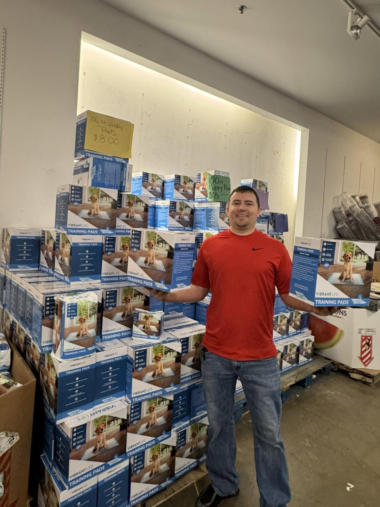

FAMILY OWNED & RUN · TEXAS · EST. 2016
About us.
Welcome to Sheffield.
Founded in 2016, Sheffield & Sheffield Liquidation is a family-owned and operated Texas business with stores in Crosby and Baytown.
We invite our Houston-area neighbors to shop for everyday essentials, explore the unexpected, and discover something that fits their life.
Visit our stores →
ROOTED IN TEXAS
Family owned.
Full of possibilities.
Serving our community since 2016.A DIFFERENT WAY TO SHOP
Come in and look around.
Some of the best finds are the ones you didn't set out to search for. From home and living to appliances and essentials, our stores offer a place to explore what's available and find your next favorite.
See current inventory through our daily Facebook advertisements, or stop by in person. Follow your local store for updates and a look at what's on the floor.